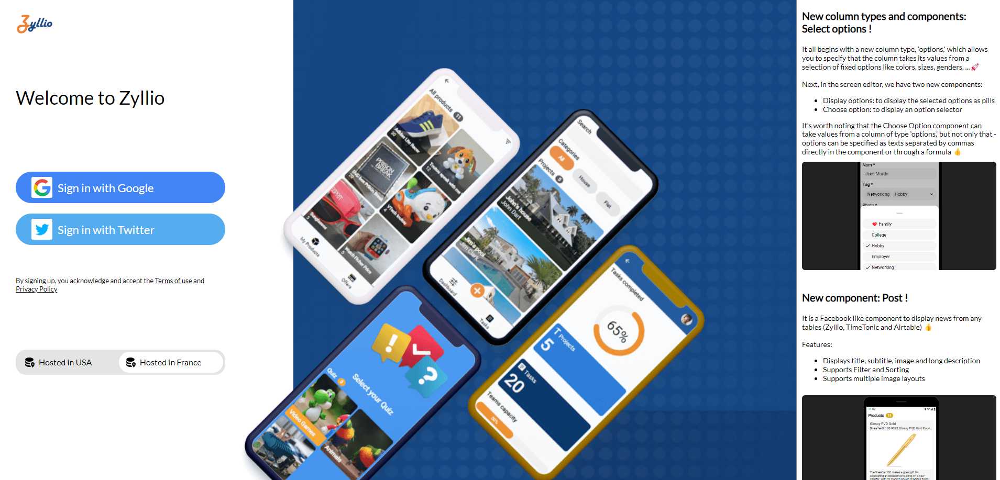

Première application
Créer un compte
Créer un compte
Vous pouvez créer un compte gratuitement sur Zyllio pour commencer. Chaque plan offre un panel de fonctionnalités différentes. Si vous voulez débuter avec la conception d'application mobile sur Zyllio, le plan gratuit est un excellent choix et propose déjà une multitude d'options. Vous allez pouvoir également choisir où sont hébergés vos données. Vous voulez que vos applications soient hébergée en France ? pas de problème ! La création d'un compte se fait en quelques secondes.
Rendez-vous sur la page d'accueil du site de Zyllio : https://zyllio.fr/

A présent cliquez sur le bouton orange Commencer gratuitement. La prochaine page vous propose de choisir l'endroit où vous voulez que votre compte et applications soient hébergés, ici en l'occurrence nous choisissons la France.

Vous avez ensuite le choix de vous connecter avec un compte Twitter ou Google. Le tour est joué, vous devirez arriver sur votre Tableau de bord ! Dans la prochaine section, nous préparerons le terrain pour démarrer notre première application !